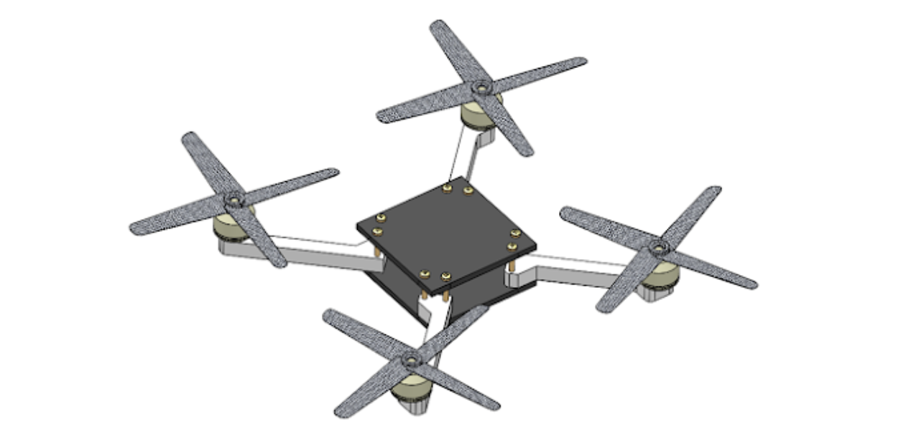

Projects & Activities

QUARTOR: Life-Saving Technology
An advanced quadcopter for disaster response, utilizing YOLOv5x object detection and thermal imaging.

ENG EK 131 - Room Temperature Monitor
An advanced room temperature monitoring system for efficient environmental control.